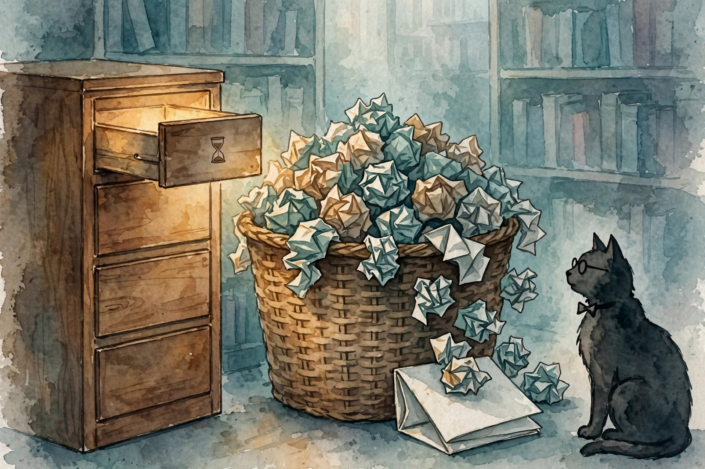

U03 built one loop. U04 scales the craft: declarative programs, frameworks, workflow patterns, agent patterns, explicit state machines, memory by lifetime, the filesystem as memory, handoffs, coordination, reliability math, the single-vs-multi decision, and the stopping rule. This companion narrates the lesson content concept by concept.
Source fact A claim or number taken from the lesson file content/v2/cs329z/lessons/u04_lesson.md. Each chart carries its lesson section.
Illustration A toy, picture, or simulation built for this page. It runs the lesson rule on tiny fixed inputs. It is not a lesson measurement.
Companion note My own synthesis. It joins lesson facts into advice. The lesson does not state it directly.
C01…C12 Concept numbers from the lesson.
Sourcing. No full lecture transcript exists for these sessions, and the sessions themselves were planned, not delivered: every concept maps to a planned session (S05 through S08) at schedule-title level only. C01 is additionally grounded in the DSPy abstract (SRC-06, inspected full). C03 and C04 are additionally grounded in the Anthropic article on effective agents (SRC-04, inspected full). C12 is a requested extension taught as independent theory. This page narrates the lesson content, not a lecture recording.
Source fact A signature declares the input-output contract, for example "question -> answer". A module is a parameterized LM call. The optimizer searches candidate prompts against a metric. Toy: 4 candidate prompts, 20 dev examples. Scores: 0.55, 0.62, 0.70, 0.78. The optimizer picks prompt 4. Hand-written baseline: 0.62. Gain: 0.16. Search cost: 4 × 20 = 80 scored calls. The cost is paid once at compile time C01 contract 6.
The toy question is "is 42 prime?" The pipeline: thought, action, observation, thought, action, observation, answer. Seven steps C01 contract 2.
The catch: the 0.16 gain on 20 examples has standard error near 0.10 per candidate. The argmax is noisy. Use a bigger dev set before trusting small gaps C01 contract 9.
The signature says what the call does. The optimizer finds how to say it.
Source fact The hand loop is 20 lines with full control: you own every bug. The framework is 5 lines with a graph runtime and retries built in, but the prompt assembly is hidden. Toy build cost: hand takes 3 days and 20 lines, framework takes 2 hours and 5 lines. Debugging a framework prompt-format bug takes 1 day because the prompt is hidden. Break-even: if the bug rate exceeds one per month, hand-rolled wins on maintenance C02 contracts 2, 6.
The framework answers "when to use" for each level: choose the abstraction that hides what you do not want to own and exposes what you must control C02 contract 3.
A framework is a loan: fast now, repaid in debugging the parts you cannot see.
Source fact Toy: 100 tickets. Single call: 0.70 accuracy at 1x cost. Routing (triage then specialist): 0.82 at 2x. The 12-point gain costs 2x. Voting with 5 reviewers on 20 hard tickets: single 0.60, vote 0.80 at 5x. The price of each pattern is explicit C03 contract 6.
The stability warning: the accuracy of the router bounds the whole pattern. A bad router poisons every branch C03 contract 9.
Accuracy without a cost multiple is just promotion. The lesson prices each pattern in calls.
Source fact The loop is "thinks, acts, observes". Toy on 20 tasks: ReAct 18/20 at 7 steps average. Plan-and-execute 15/20 at 5 steps average (fails 3 on surprise observations). Reflection 19/20 at 12 steps average. Cost per success: ReAct 7.8 steps, planning 6.7, reflection 12.6. Planning is cheapest per success here. Reflection is most accurate C04 contract 6.
The mechanism difference: ReAct conditions each step on all observations so far. Planning fixes the steps before any observation, which is brittle to surprises. Reflection adds a second pass that can catch errors the first pass missed, at 2x the cost C04 contract 5.
The 19/20 versus 18/20 gap has standard error 0.083: not significant on 20 tasks C04 contract 9.
Planning wins when the world cooperates. ReAct wins when it does not.
Source fact A scaffold is the agent drawn as an explicit state machine: every state named, every transition labeled. Toy chart: 6 states, 9 edges. A trace of 12 steps uses 4 distinct edges. Coverage = 4/9 = 0.44. Untested edges are where the next bug hides. The number tells the tester where to look C05 contract 6.
Charts rot as code changes. Regenerate from code, not from docs C05 contract 9.
The happy path gets all the testing. The error edges get all the bugs.
Source fact Short-term memory is the last 20 steps in context (working memory). Long-term memory is a summary plus a vector store of all 50 steps (persistent memory). Step 45 needs a fact from step 3: short-term misses, long-term recalls C06 contract 2.
Toy: 10,000 tokens of history, window budget 2,000 for history. The oldest 8,000 tokens are summarized into 500 (16x compression). Kept: 500 + 2,000 = 2,500 tokens. Recall test on 10 facts from the old history: the summary keeps 7. Recall 0.70 at 16x compression C06 contract 6.

16x smaller, 30 percent of the facts gone. That is the trade, stated plainly.
Source fact The summary from C06 is lossy. Exact facts live in files: notes.md with three entries (goal, constraint, step-3 fact). The agent greps the file instead of trusting the summary. Exact recall, zero compression loss, one file read C07 contract 2.
Toy: 50 steps, each step writes one 20-token note = 1000 tokens of notes. Recall of the step-3 fact: grep finds it in 1 read. Compare C06: the 500-token summary kept it with probability 0.70. Files use 2x the tokens and give 1.00 exact recall on written facts C07 contract 6.
A file read is exact. A summary is a bet. For facts you must not lose, take the file read.
Source fact Toy: agent A runs 8,000 tokens of research. The handoff envelope is 200 tokens: goal, key findings, open questions, constraints (40x smaller). Agent B reads 200 tokens and proceeds. Without the envelope, B re-runs the research: 8,000 tokens wasted. The envelope pays for itself 40x C08 contract 6.
The stability rule: schema-version the envelope. Agents evolve, and an old reader misreads a new envelope C08 contract 9.
A handoff without an envelope is a research project assigned twice.
Source fact Toy: 3 agents, 10 updates each. Blackboard: 30 writes, 30 reads (everyone polls). Messages: 30 sends, 30 receives, but each agent reads only its 10 relevant ones. Total traffic is equal. Relevance differs. Coordination bugs on the toy: blackboard 2 overwrites, messages 1 lost message C09 contract 6.
The tradeoff: the blackboard is simple and racy. Messages are targeted and can be lost. Pick by the failure you can afford C09 contract 5.
Both designs move 60 events. One corrupts shared state, the other drops messages.
Source fact Three agents in sequence, each 0.9 reliable. Pipeline reliability: 0.9³ = 0.729. One in four runs fails somewhere. Add a check after each agent that catches 80 percent of errors: effective per-stage reliability 0.9 + 0.1 × 0.8 = 0.98. Pipeline: 0.98³ = 0.941. Each check costs 200 tokens. Three checks = 600 tokens to buy 0.21 reliability. If a failure costs 10,000 tokens of rework, expected rework saved per run is 0.212 × 10,000 = 2120 tokens. The checks pay 3.5x C10 contracts 2, 6.
Break independence: all three agents share the same wrong tool and fail together. The product rule overestimates reliability C10 contract 11.
Reliability multiplies, so it decays. Checks at the seams buy it back.
Source fact Three specialist agents beat one generalist by 7 points. Is it worth 5x the cost? Toy: single agent 0.74 at 1x. Three agents with handoffs 0.81 at 5x. Gain per extra cost = 0.07/4 = 0.0175. Below a 0.03 bar: the single agent ships. Flip the toy: multi scores 0.90 (gain 0.16/4 = 0.04). The verdict flips to multi. The bar decides, not the architecture fashion C11 contracts 2, 6.
The eval warning: the 0.07 gap on n = 100 has standard error 0.036. Barely significant. Grow the eval before deciding C11 contract 9.
More agents must earn their cost in measured gain per extra call.
Source fact Toy: each step 500 tokens, B = 10. A stuck loop without stall detection burns 10 × 500 = 5000 tokens. With stall detection at k = 3, it burns 3 × 500 = 1500 after the stall starts. Savings: 3500 tokens per stuck run. At 100 stuck runs a day: 350,000 tokens C12 contract 6.
The stopping rule set: the budget B, a stall detector (no new information for k steps), and an explicit "stop" action the model can take on its own. Three rules, each catching what the others miss C12 contract 3.
The loop needs three ways out: the budget, the stall detector, and the model own stop.
| # | Concept | Transferable principle |
|---|---|---|
| 01 | DSPy | Declare contracts first. Compile prompts against a metric. Distrust small gains on small dev sets. |
| 02 | Frameworks | Prototype on the framework. Roll your own when the hidden parts cost more than the visible parts save. |
| 03 | Workflows | Write the accuracy and the cost multiple side by side before choosing a pattern. |
| 04 | Agent patterns | Measure the surprise rate of your task, then pick the pattern. |
| 05 | Scaffolds | Draw the scaffold before coding it. Cover the edges, not just the nodes. |
| 06 | Memory | Split memory by lifetime. Compress the old, keep the recent raw, and measure recall. |
| 07 | Files as memory | Externalize decisions, constraints, and plans to files. |
| 08 | Handoffs | Define the envelope schema before adding the second agent. |
| 09 | Coordination | Choose the failure mode you can detect, then add the guard. |
| 10 | Reliability | Place checks where failures are cheapest to catch: after each stage. |
| 11 | Single vs multi | Set the gain-per-cost bar before the experiment. |
| 12 | Stopping | Detect repetition, not just length. Three steps with no new information is a stall. |
Companion note The lesson plates u04_f01 through u04_f06 (before/after pairs from the original toys) sit behind this page's figures: f01 the DSPy optimizer, f02 the workflow patterns, f03 the ReAct loop, f04 the memory compression, f05 the reliability pipeline, f06 the single-vs-multi rig. Each chart above re-plots the same lesson numbers with its section citation.